A 3 hours long design jam where we had 2 hours to create an empathy map for the persona Sun Li. Sun Li is about to graduate with a masters in HCI. She is a new mom with a 2 year old son. She has 5 years of industry experience.
"Design a better way for a prospective college graduate to plan and execute their career search"
This excercise helped me understand the importance of being in our user's shoes. What are Sun's pain points? Hopes and fears? What is she doing, thinking, and feeling throughout the process from graduation to working in the industry?
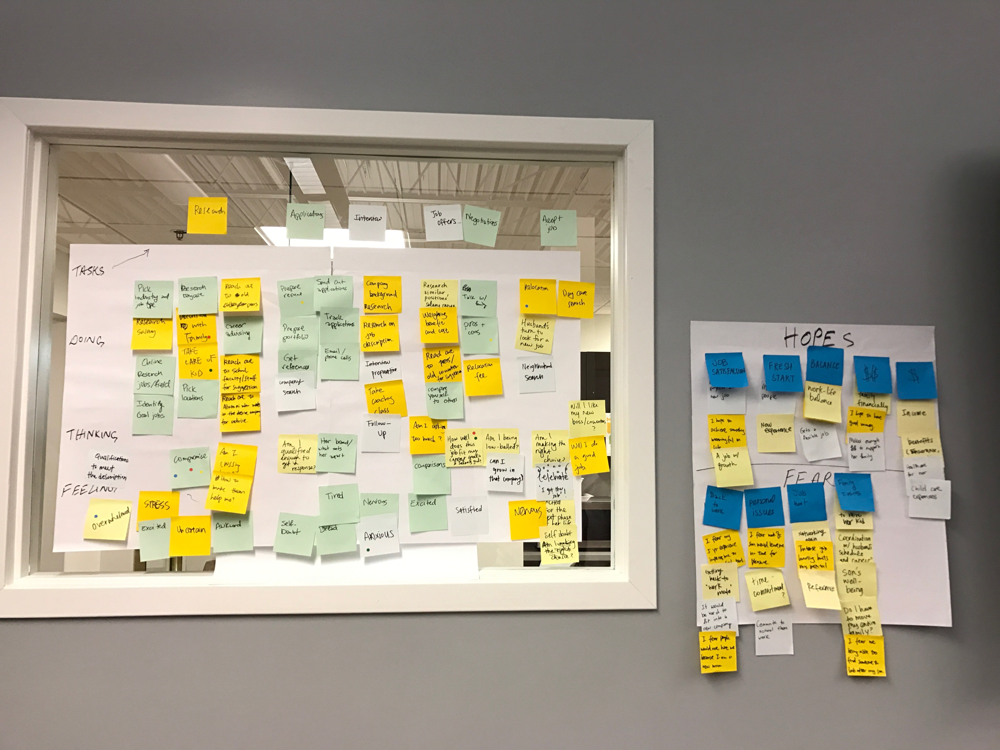"As a mother about to graduate, I need a job that provides me work-life balance so that I can take care of my kid while feeling fulfilled professionally."
Next design jam...
A 3 hours long design jam where we had 2 hours to brainstorm ideas, wireframe, and make a 5 minutes presentation. We were given a persona (Karen) and made design decisions to increase her trust in using a 3rd party app on her personal mobile device.
"How do we make Karen comfortable and trust Duo Mobile when she downloads it for the first time?"
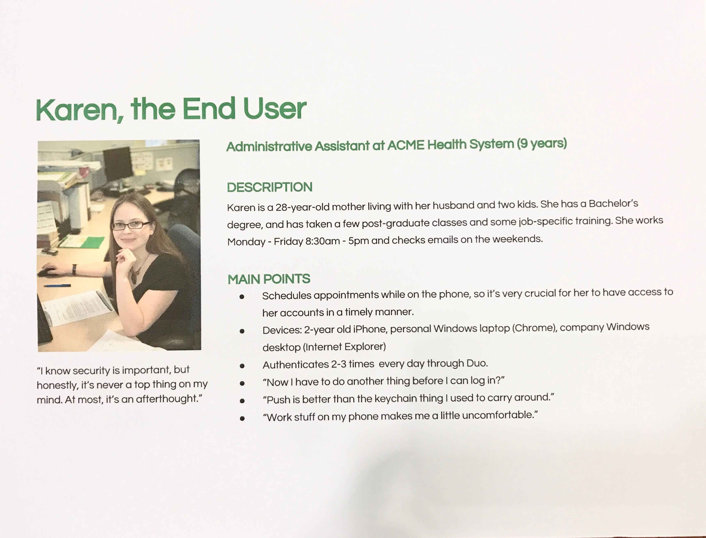Karen, the end user.
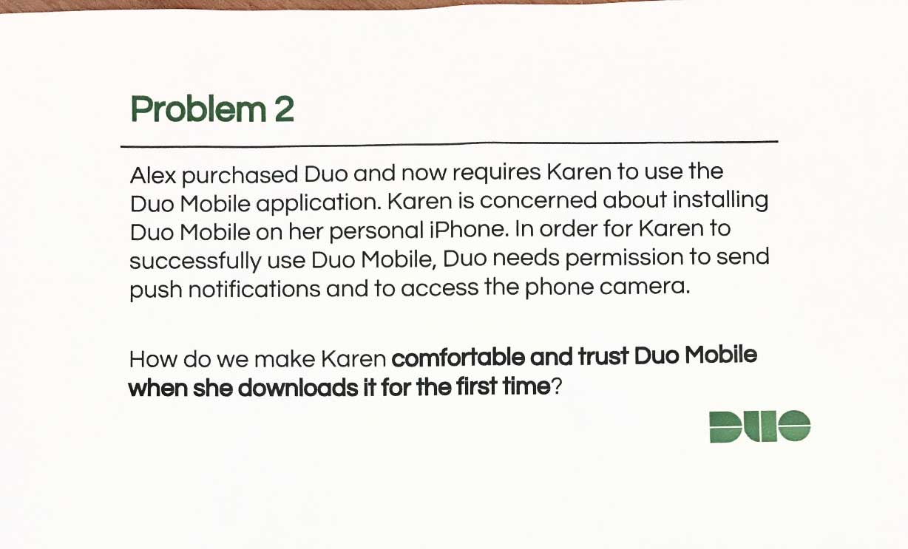Problem statement.
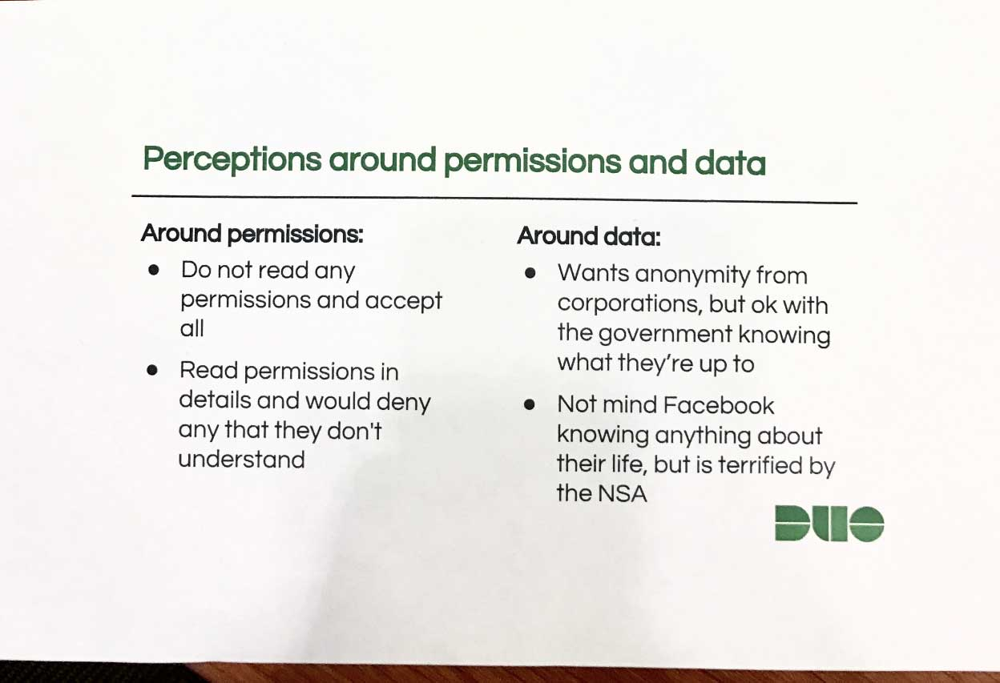Perception around permissions and data.
We first went to the app store and downloaded the Duo Mobile app to familiarize ourselves with the app and put ourselves in Karen's shoes.
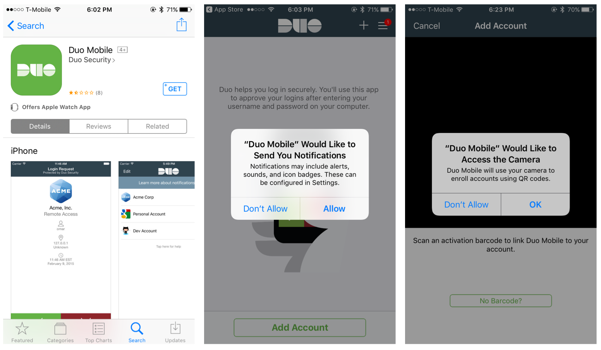We started off our brainstorming session by listing out Karen's pain points in using the app and points where she could feel violated or distrust in installing and setting up Duo Mobile.
As the discussion develops, we established a vision for Duo. We emphasized the positive relationship between the app and its user and reassuring the user on the power and integrity of the app.
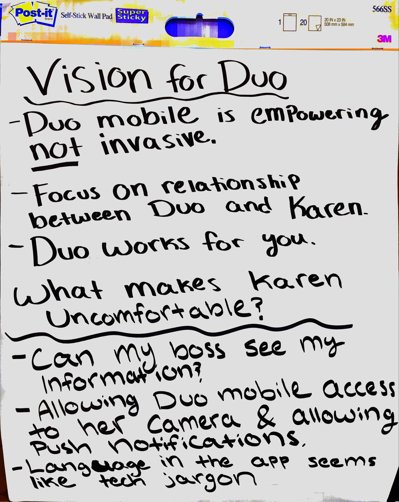Taking inspriation from current trends, we found that having an onboarding process for first time users leads to greater familarity and trust with an app.
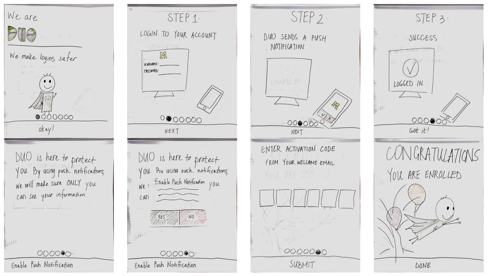Next design jam...
A 3 hours long design jam where we had roughly 2 hours to brainstorm ideas, wireframe, and make a 5 minutes presentation. Since our time was very limited, we decided to forgo the website and just focus on Facebook's mobile app.
"Sketch/prototype/improve the photo retrieval and upload process on Facebook."
Our team really liked how iOS 10 sorts photos in the Photo app through their metadata. We would like to bring a similar metadata sorting to Facebook's photo upload and retrieval.
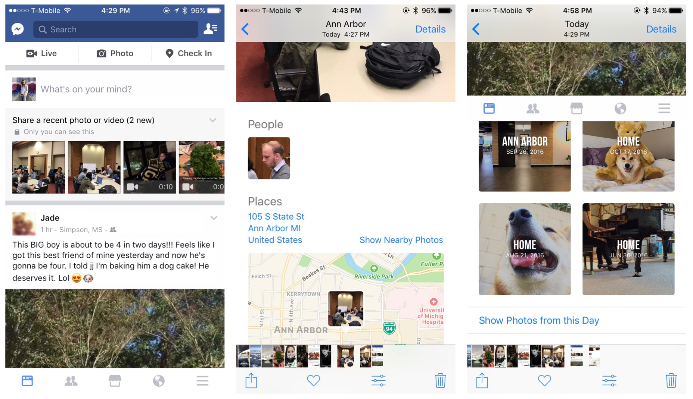We spent a lot of time talking about what we would personally like to see in the photo upload and retrieval process. In the end, we narrowed down the filtering options of metadata to date, location, people, and user-defined hashtags for each photo.
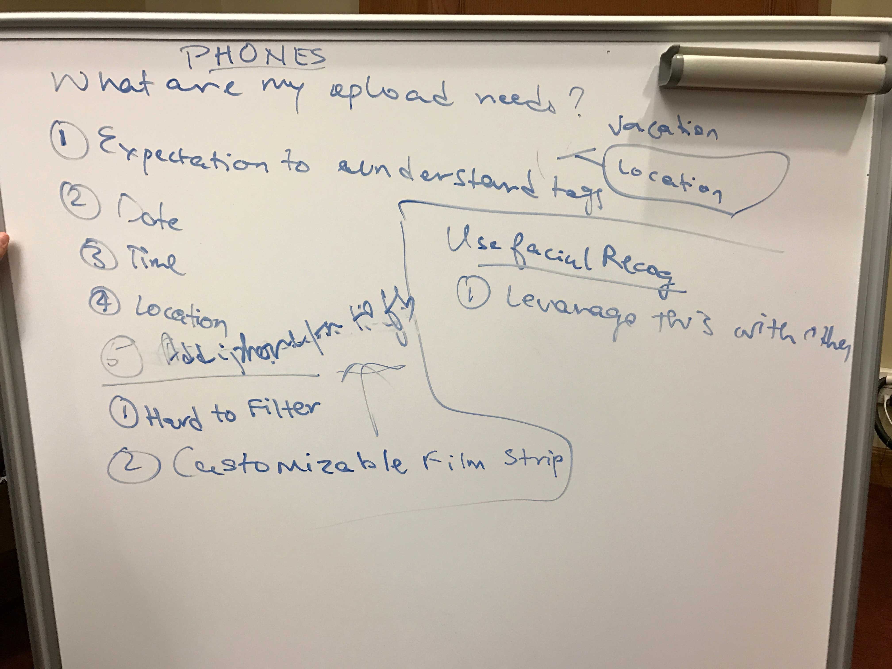 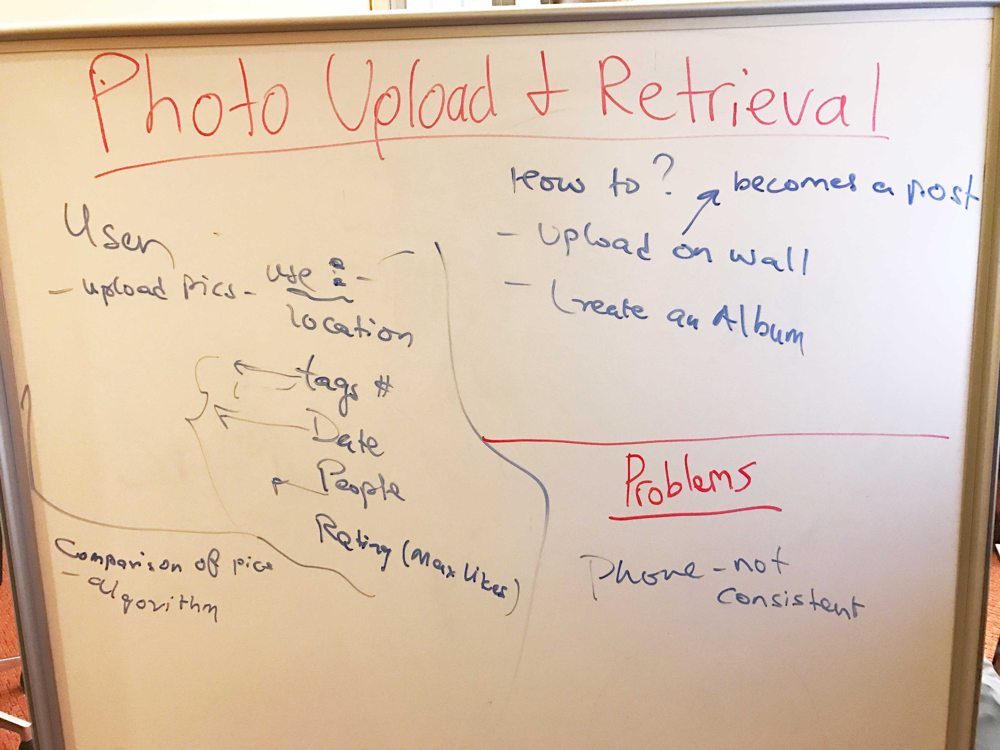 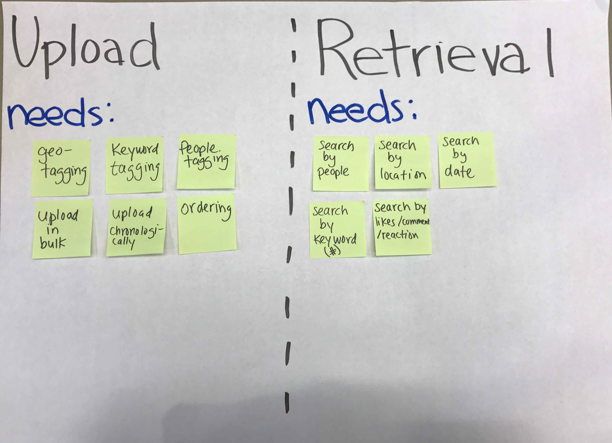Upon opening the Facebook app, a filmstrip of photos appears asking the user to share a recent photo or video. Our team decided that we want to be able to filter our pictures through its metadata to quickly find the photo the user would like to upload instead of scrolling through all your chronologically organized photos.
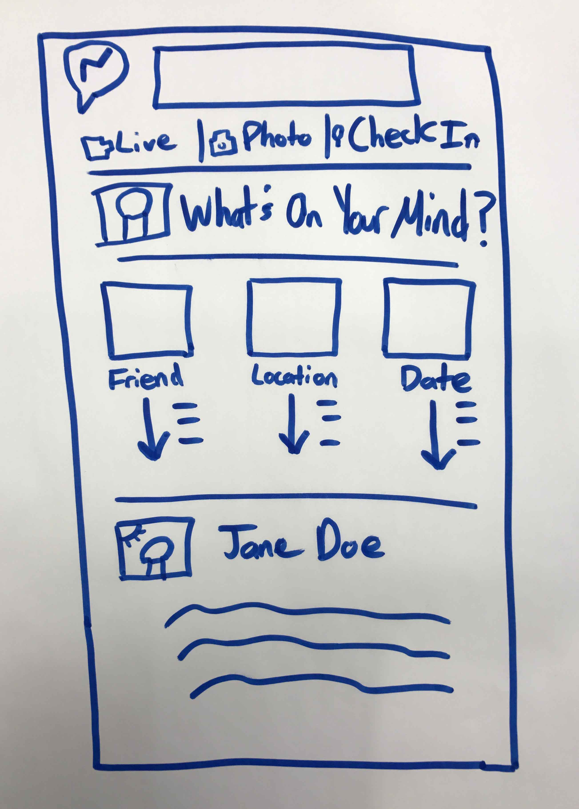Wireframe of picture upload.
Same with the upload process, we decided the best way to find the target photo is to find it through the metadata. For example, the user can filter through pepole in the photo, the number of likes, or location or date the photo was taken.
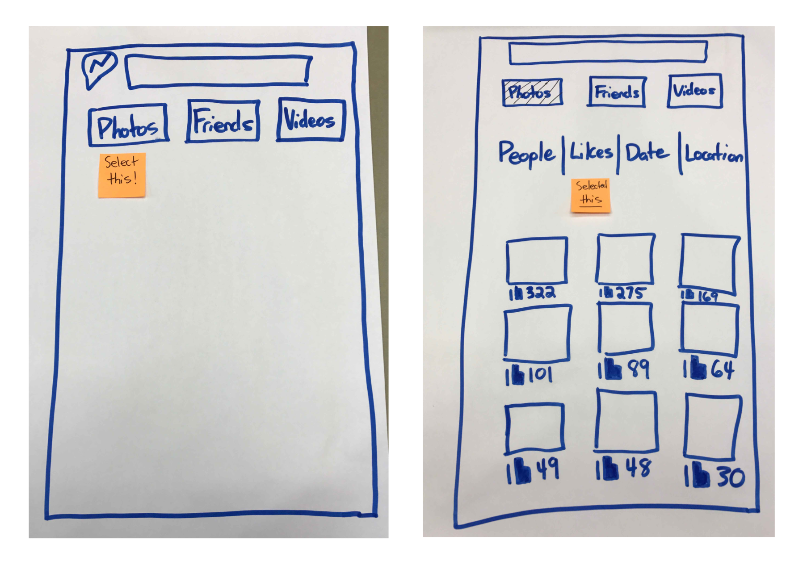Wireframes of picture retrieval.